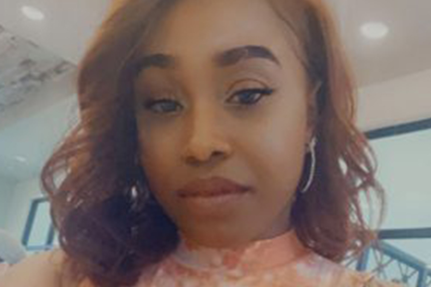

Ms. T. is a great teacher in thePersevere Program. She's very paitent with every student in
the class. She puts up with us and her little one running around everywhere while she's trying to teach.
I don't think we could have gotten any luckier than for her to be our teacher
TIANA TURMAN
Hi my name is Tiana Turman. I was incarcerated at Perryville Women's Prison in Goodyear, Arizona where I
was sentenced
to 10 years. I was only 18 years old when I was arrested.

TIANA'S STORY
I fought my case for 2 ½ years in the Maricopa county jail which was a very scary and emotional
journey. One of the thoughts that continuously ran through my mind was that my life was over. That
even when I am free I will never be able to get a job or go back to school! Having a felony was the
worst thing ever but also having a felony for 2nd degree murder was even worse. Once I got to prison
when I was 21 I took classes and programs that were available to me but none of them made me feel
like I could enter society again and be successful. I worried that when I came home it would be hard
on my family to support me. I would need so many things like a car, a job, clothes, food, basically
everything! but my last year in prison I was in a minimum yard and I saw flyers about Persevere, so
I decided to check it out and see what they had to offer. I was skeptical because I was used to
being turned down from certain programs because of my charge so I didn't want to face that
disappointment again. But I figured why not try and apply and see what happens. I always wanted to
be some kind of designer whether it be logos, websites, photos whatever it was I wanted to create
something. When I got accepted into the class it was more than I expected. I expected to learn how
to code but I also learned how to LIVE. the program also offered techniques on how to work in a
workplace, how to understand our emotions, how to cope with past and present trauma, our teachers,
Mr. Valdez and Mr. James, created a safe place for us in that classroom. A place where we could be
free to express ourselves, grow and prosper. Some people doubted if the program would really help us
find jobs once released and how could we trust this program when every other program the prison
offered usually lied and failed us. But they always reassured us that we would become successful.
And we did! I've been home for a year now and I have been able to do things that I wouldn't be able
to do if it weren't for Preserve!! I've been able to help my family. I've been able to buy birthday
presents, Christmas presents and do things for myself. I sometimes think what if Persevere never
came to my yard and offered me this opportunity, where would I be today? Well I know one thing for
sure, things would be extremely hard on me and my family. Persevere helped get the job at Banyan
Labs where I was given so much information and knowledge. I learned so much from Banyan Labs. I
never stopped believing in the program because Persevere never stopped believing in me. I know I can
only go up from here Persevere has created a foundation for me to stand on for my family, and now
that I'm pregnant with my first child, my son will also have a solid foundation to stand on all
because of Persevere. I bought my first car and I'm looking forward to having my first home!I have
so many firsts because of Persevere and their hard work and dedication. Thank you for this
opportunity and this amazing gift! Yes, I have a felony but I am also a web developer and now a
coding instructor helping young kids learn to code and also adults who have been in my situation. It
feels good to help others like I was helped and watch individuals grow and create positive change.
My grandma told me while I was in prison when I first started the class that one day Persevere would
ask me to come work for them. I thought she was crazy. I was like well I will work for Banyan Labs
and from there we'll see where it goes. But she was right almost two years later Stacie Books
offered me a job as a coding instructor for Persevere and here I am now doing what I love, helping
others and coding!
“When Persevere came to me,” she concludes, “I was literally depressed to the point where I didn't
want to wake up. My time was hard and that last year was the hardest. I got fired from a good job.
Some officers and inmates were trying to get me off the yard. But then Persevere put a shield around
me so no one could affect me. They couldn't take Persevere away from me. I was part of that 22-women
group and we hid in the arms of the program.” Beyond a job, then, coding provided her some kind of
hope.
image and article fromhttps://www.perseverenow.org/some-kind-of-hope-tiana-turmans-story/